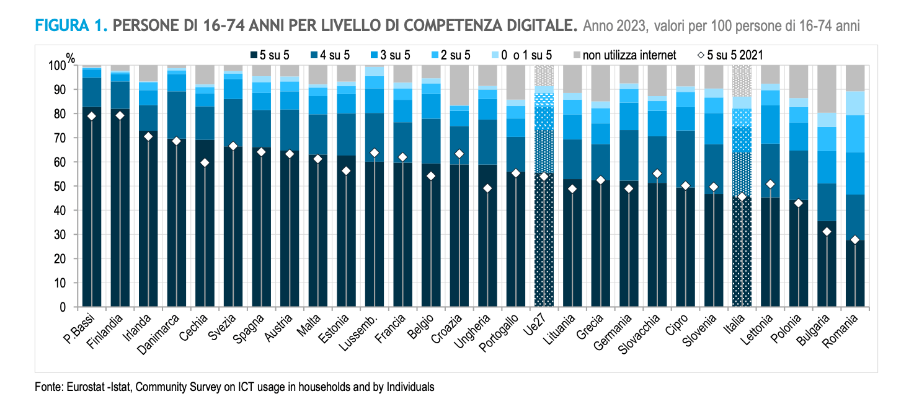
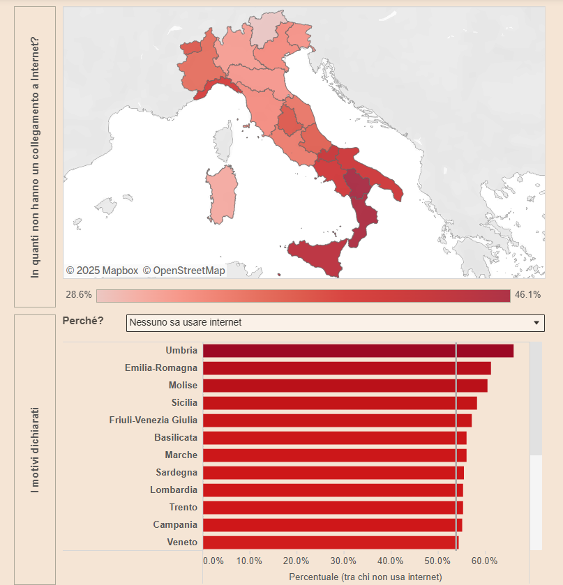
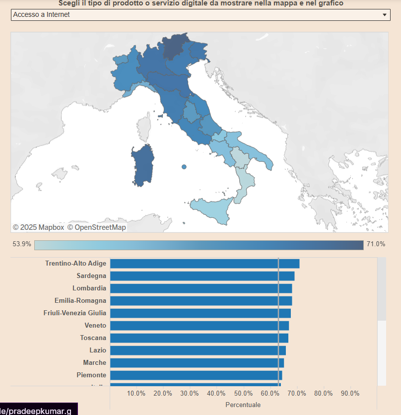

Statistiche europee

Analizzando la popolazione di età compresa tra 16 e 74 anni, i dati sono stati suddivisi in sei categorie, che vanno dalla piena padronanza delle tecnologie (“5 su 5”) fino a una condizione di scarso utilizzo o addirittura all'assenza di internet. In particolare, paesi come Paesi Bassi, Finlandia e Irlanda emergono per l'elevata percentuale di cittadini con competenze digitali complete, suggerendo un forte investimento in infrastrutture e formazione tecnologica, mentre nazioni quali Italia, Bulgaria e Romania mostrano risultati meno soddisfacenti, evidenziando problematiche legate all’accesso e all’utilizzo delle tecnologie digitali. Queste statistiche sottolineano non solo il divario esistente in termini di alfabetizzazione digitale, ma anche le implicazioni socio-economiche che ne derivano, influenzando l’occupazione, l’istruzione e la partecipazione attiva nella società digitale, e richiamano l’attenzione sulla necessità di interventi mirati per promuovere un equilibrio più equo in tutto il continente.
Statistiche italiane


La situazione italiana evidenzia un digital divide che si manifesta su più livelli, includendo non solo le infrastrutture tecnologiche ma anche le competenze digitali dei cittadini. I dati presentati nei grafici mostrano come, in alcune regioni del paese, la percentuale di popolazione senza accesso a Internet oscilli tra il 28,6% e il 46,1%, fenomeno particolarmente marcato nel Mezzogiorno. Parallelamente, emerge una problematica legata all'alfabetizzazione digitale: in territori quali Umbria, Emilia-Romagna, Molise e Sicilia oltre il 50% degli intervistati dichiara di avere difficoltà nell'utilizzo delle tecnologie. Questi elementi evidenziano come il divario digitale in Italia sia una questione accesa, in cui le disparità territoriali si traducono in evidenti svantaggi socio-economici, richiedendo l'adozione di politiche coordinate che puntino sia a potenziare le infrastrutture tecnologiche sia a promuovere la formazione digitale per garantire a tutti i cittadini un accesso equo alle opportunità offerte dalla trasformazione digitale.